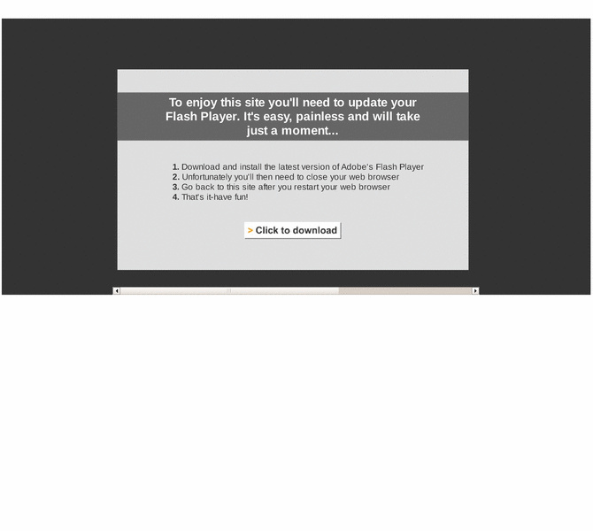

Previewing: Nice Touch Handmade Goat Milk Soap Previewing: Nice Touch Handmade Goat Milk Soap 
Use the left/right red arrow controls to navigate through this ring - Click the preview image to visit the member site.

Pamper yourself and your loved ones with these bars of heaven. Your friends and family will be delighted by these hand-made soaps! Not only are they beautiful and aromatic, they're wonderful for your skin! Can be personalized for gifts, bridal showers, birthdays, wedding favors, baby announcements, Bar/Bat Mitzvahs, bachelorette parties, or anniversaries.
Nice Touch Handmade Goat Milk Soap owned by:
 nice_touch nice_touch
A member of the original webring since 04/23/2011.
|
|